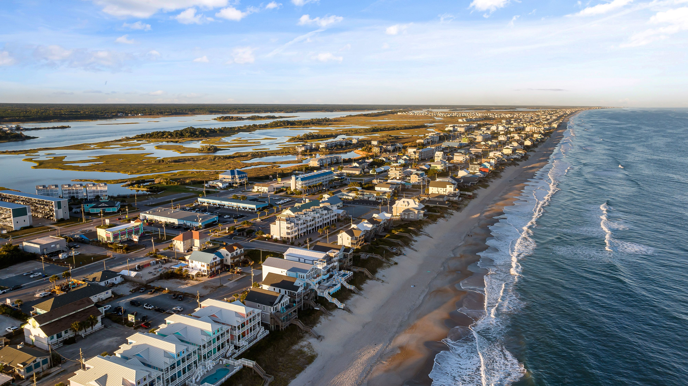

Indoor & Outdoor Activities
Find exciting things to do, including fishing, boating, sightseeing, shopping, and other activities around the area. There are plenty of ways to enjoy the coast during your visit.
Explore ActivitiesExplore the Coast and Discover New Adventures

Welcome to my Local Guide for Morehead City, North Carolina! Located in Carteret County, Morehead City is a coastal town where visitors can enjoy beautiful waterfront views, outdoor adventures, and local restaurants.
I created this website for people who enjoy traveling to new destinations, exploring different places, and trying new experiences. Whether you enjoy spending time on the water, visiting local attractions, or discovering new foods, Morehead City has something to offer.
One of the things that makes Morehead City interesting is its coastal atmosphere. Visitors can walk along the waterfront, explore nearby attractions, enjoy local businesses, and experience the area's connection to fishing and seafood.
Morehead City is also close to beaches, museums, and other destinations along North Carolina's Crystal Coast. This makes it a good place for a weekend getaway or a longer vacation.
Find exciting things to do, including fishing, boating, sightseeing, shopping, and other activities around the area. There are plenty of ways to enjoy the coast during your visit.
Explore ActivitiesDiscover local seafood restaurants, waterfront dining experiences, and places to enjoy a meal after exploring. Morehead City offers a variety of dining options for visitors.
Explore DiningTake a walk along the waterfront and enjoy views of the harbor, boats, and surrounding coastal scenery. It is a relaxing way to experience the town.
This annual event celebrates North Carolina's seafood industry with food, entertainment, and activities. It is one of the area's well-known coastal traditions.
Morehead City is close to beautiful Crystal Coast beaches where visitors can enjoy swimming, relaxing, and spending time by the ocean.
Before visiting Morehead City, it helps to plan ahead so you can make the most of your trip.
Whether you are visiting for a weekend or planning a longer vacation, Morehead City offers opportunities to explore the coast, try local food, and make new memories.
I hope this guide helps you discover interesting places and enjoy your time in Morehead City, North Carolina!